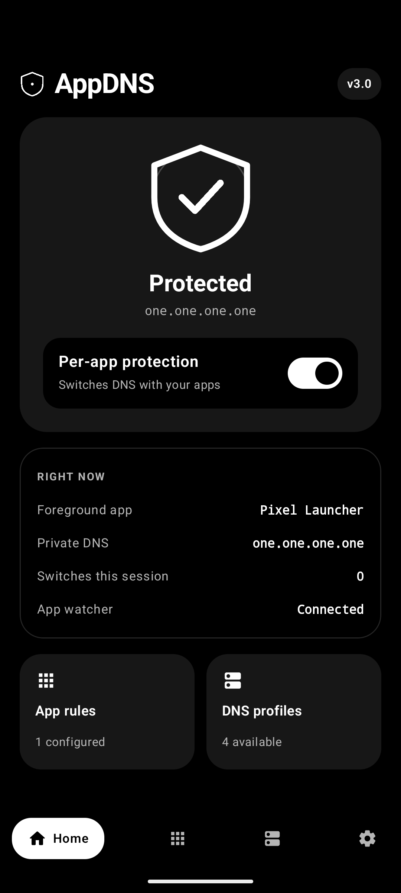
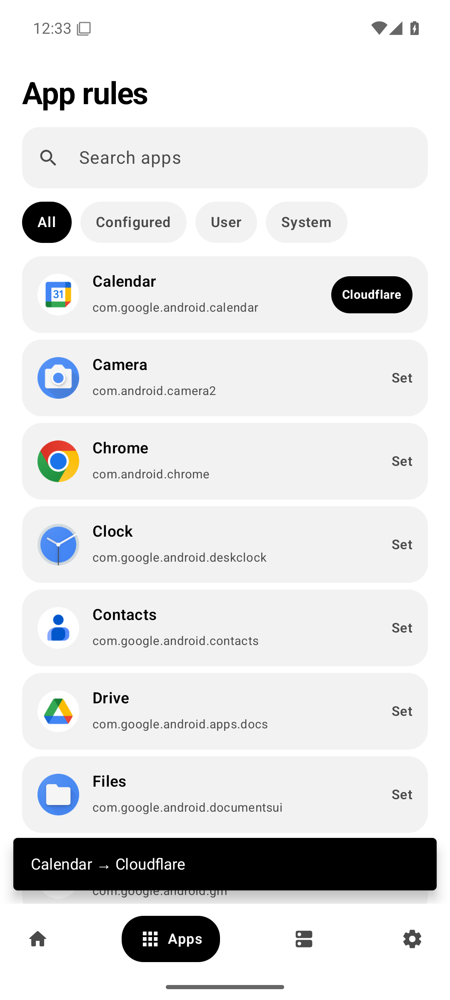
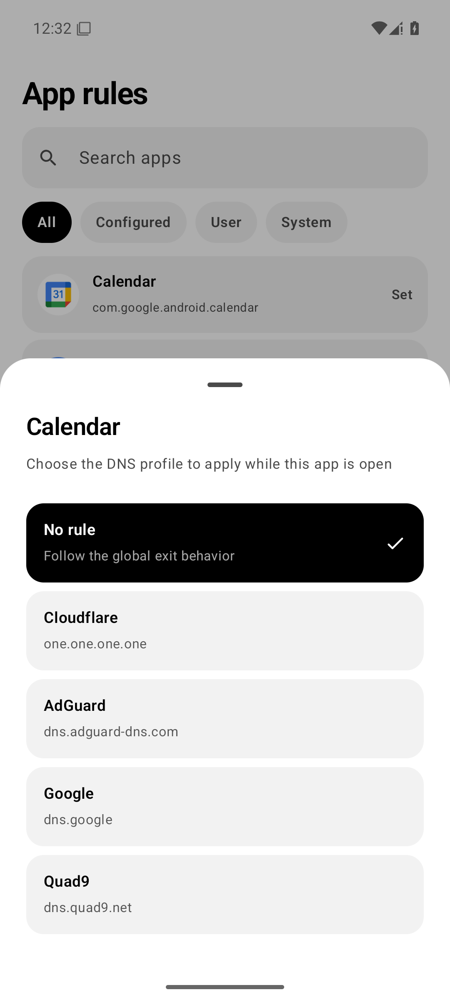
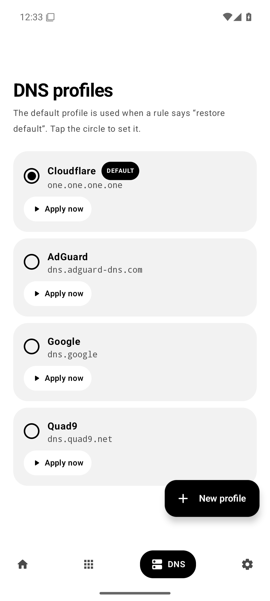
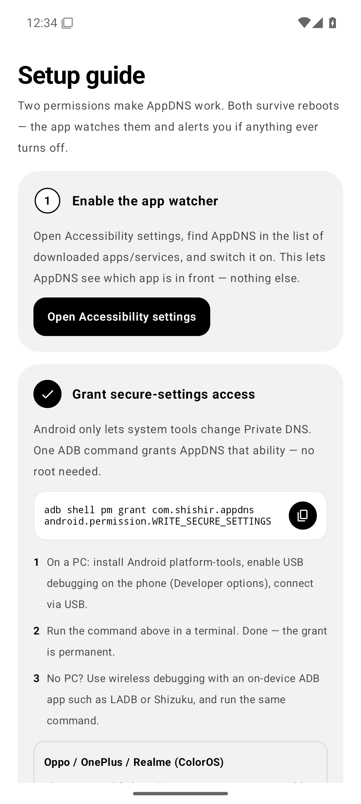
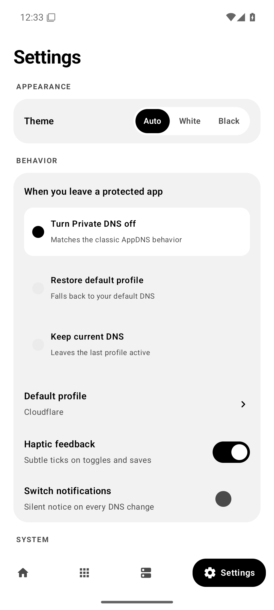
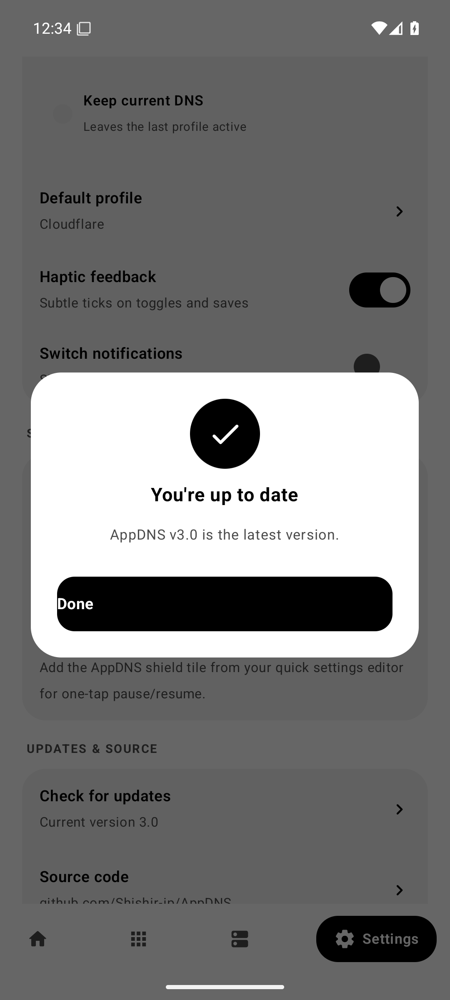

Instant switching
Under 10 ms from app launch to DNS change. An event-driven engine with zero polling, zero debounce and zero database hops.
Free · Open source · Android 9+
AppDNS switches Android's native DNS-over-TLS the moment you open an app — AdGuard for your browser, Quad9 for banking — and turns it off when you leave. No root. No VPN. No battery drain.

Why AppDNS
A complete rebuild of per-app DNS on Android — faster, calmer, and honest about what it does.
Under 10 ms from app launch to DNS change. An event-driven engine with zero polling, zero debounce and zero database hops.
Give every app its own DNS profile. Search the app list, filter user / system / configured apps, and toggle rules individually.
One ADB grant, then AppDNS writes Android's own Private DNS setting. Your VPN slot stays free for WireGuard, Tailscale or work VPNs.
Reboot-safe. If accessibility or the ADB grant is ever disabled, a notification and a home-screen banner show you exactly how to fix it.
Two pure themes, spring-physics toggles, rubber-band scrolling, staggered animations and haptic ticks. Feels like a flagship app.
Check for updates, read the changelog, download with live percentage and install — all without leaving AppDNS.
No ads, no analytics, no tracking. Internet is used only by the optional in-app updater (GitHub releases). The accessibility service reads only the foreground app's package name — never screen content.
AdGuard, Cloudflare, NextDNS, Quad9 and Google built in — plus unlimited custom DNS-over-TLS hostnames like Control D or Mullvad.
A shield tile in your notification shade pauses or resumes protection with one tap. Smart exit behavior: off, restore default, or keep.
How it works
AppDNS uses Android's built-in Private DNS — the same toggle in Settings → Network. It just flips it for you, at the right moment.
Android fires a window-change event. AppDNS sees only the package name — nothing else.
A single in-memory lookup finds the app's DNS profile. No database, no waiting.
One Settings.Global write sets the provider and mode. Android handles the encrypted DNS-over-TLS connection.
DNS turns off, restores your default profile, or stays — whichever you chose in Settings.
While a protected app is in front, the whole device uses that DNS provider — background apps included. AppDNS is a privacy convenience, not a security boundary.
Screenshots
Real screens from AppDNS v3.0 — swipe, tap the tabs, or use arrow keys.






Breathing shield, master switch, current app + DNS readout and a session switch counter.
Setup
No root, no unlocked bootloader. One accessibility toggle and one ADB command — the in-app guide tracks every step live.
Download v3.0 (~2.3 MB) and allow “install unknown apps” if asked. Upgrading from v2? Uninstall the old app first — it used a different signature.
Download AppDNS.apkOpen AppDNS → Setup guide → Open Accessibility settings → find AppDNS → turn it on. This is how AppDNS knows which app is in front.
Reads only the foreground package name. Never screen content.
Enable USB debugging, connect to a PC with platform-tools, and run:
adb shell pm grant com.shishir.appdns android.permission.WRITE_SECURE_SETTINGS
No PC? Run the same command on-device with LADB or Shizuku over wireless debugging.
If the command fails with SecurityException: Neither user 2000…, ColorOS is blocking ADB grants:
Optional but recommended: allow notifications (permission alerts) and set battery to Unrestricted so switching stays instant after long idle. Then open Apps, tap any app, pick its DNS profile — done.
Comparison
| AppDNS | VPN-based DNS apps | Manual Private DNS | |
|---|---|---|---|
| Per-app automation | |||
| Uses your VPN slot | No | Yes — always-on | No |
| Root required | No | No | No |
| Battery impact | Near zero (event-driven) | Constant VPN service | None |
| Switch speed | <10 ms, automatic | Varies by tunnel | Manual, every time |
| Reboot / permission alerts | Varies |
FAQ
AppDNS is a free, open-source Android app that automatically switches the system Private DNS (DNS-over-TLS) provider based on the app you're using. Open a configured app and its DNS profile applies instantly; leave it and DNS turns off or restores your default.
No. One ADB command grants WRITE_SECURE_SETTINGS once — no root, no unlocked bootloader. You can also run the command on-device with Shizuku or LADB over wireless debugging.
No VPN at all. AppDNS writes directly to Android's native Private DNS setting, so your VPN slot stays free — WireGuard, Tailscale and work VPNs keep working, and there's no always-on VPN notification.
Any DNS-over-TLS hostname: AdGuard, Cloudflare, NextDNS (<id>.dns.nextdns.io), Quad9, Google, Control D, Mullvad — or your own server. Four profiles are built in and you can add unlimited custom ones.
Typically under 10 milliseconds after an app comes to the foreground. Rules live in memory and an accessibility window-change event triggers a single system write — no polling, no database, no debounce (that was the v2 problem).
No. AppDNS is event-driven and idle between app switches — no background polling, no network traffic. The only internet use is the optional update check you trigger manually in Settings.
Both permissions normally survive reboots. If your device ever disables the accessibility service or revokes the ADB grant, the permission watchdog detects it on boot, screen-on and every 30 minutes — then shows a notification and a home-screen banner with a fix-it guide.
AppDNS reads only the foreground app's package name from window-change events. It never reads screen content, keystrokes or personal data. There are no ads or analytics — the only network use is the optional update check/download from GitHub that you trigger in Settings. The full source code is public on GitHub.
ColorOS blocks ADB permission grants with SecurityException: Neither user 2000…. Enable Developer options → turn on “Disable permission monitoring” (sign-in may be required), restart the phone and run the command again. The in-app setup guide walks you through it.
Google automatically blocks sideloaded apps that use an accessibility service in some regions — it's a blanket policy, not a malware finding. AppDNS is open source and clean. Workaround: install via ADB with adb install -r AppDNS.apk, which bypasses the install dialog. On a work profile, install into the work user (adb shell pm list users to find its ID, then adb install -r --user <id> AppDNS.apk). A Play Protect appeal is in progress; a Play Store listing is planned.
Completely free and open source under Apache 2.0 — no ads, no tracking. Works on Android 9 (Pie) and newer, including Android 15. The APK is ~2.3 MB and future versions install through the built-in updater.
Free forever · Apache 2.0 · no ads, no tracking, no analytics.
Android 9+ · ~2.3 MB · all releases